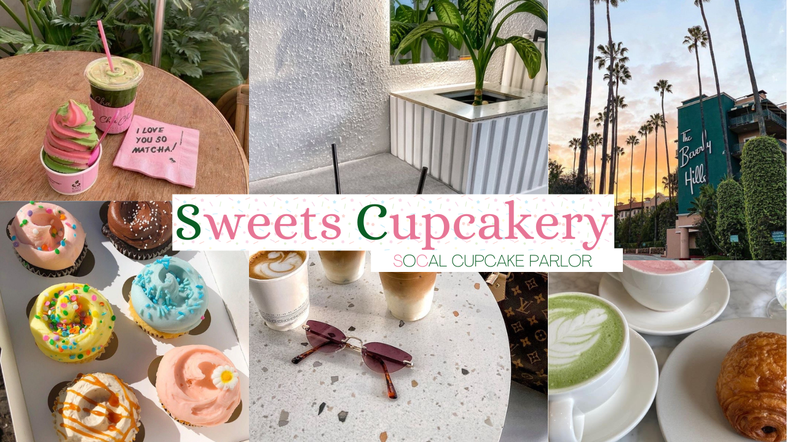
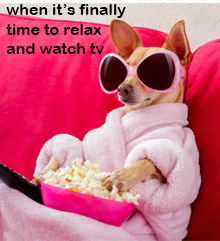
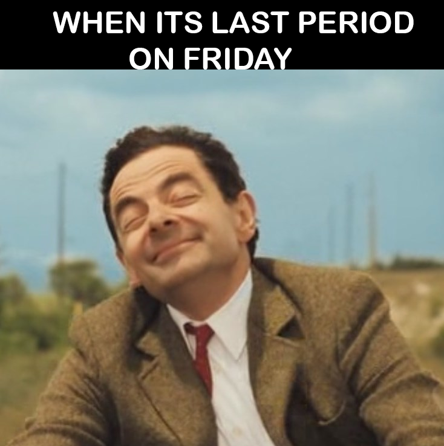

Digital Media
Below are some of my favorite pieces of artwork created in digital media this year.
Sweets Cupcakery Mood Board
 (1).png)
Sweets Cupcakery Thumbnail Photo

Artist statement:
I made a cupcake shop called Sweets Cupcakery. The location I envision for it is
Southern California so in the logos I added the words SoCal Cupcake Parlor below Sweets
Cupcakery. I made the S and C in Sweets Cupcakery a different color than the rest of the letters
and the S and the C in SoCal a different color than the rest to symbolize that the S and C is for
SoCal. I wanted the color palette to be white, pink, and green. I looked on pinterest for pictures
that are those colors and have the vibe I wanted the cupcake shop to have. I used photos of The
Beverly Hills Hotel, the beach, cupcakes, and some other things that I felt resonated with Sweets
Cupcakery. For the thumbnail, I used five pictures that I thought symbolize the brand the most. I
made two logos - a circular logo, and a rectangular one. I included a cupcake graphic, and the
name of the company in the circular logo. For the rectangle logo, I included the name of the
company and I matched the sprinkles on the cupcake to the sprinkles in the rectangle logo.
Meme Project #1

Meme Project #2

Artist statement:
I created two memes. My first meme displays a dog with sunglasses on, eating popcorn and watching a movie. I then wrote on the image, "when it's finally time to relax and watch tv". My second meme displays a man riding a bike, looking very joyful and I wrote, "when its last period on friday". I chose these two memes because I found that they were both funny and many people could relate to them.
Logo Project:
Artist statement:
I created a cupcake logo on
Reflection of digital media
I have enjoyed digital media this year. I found most of the projects to be fun and I have learned lots on the functions of digital art apps.